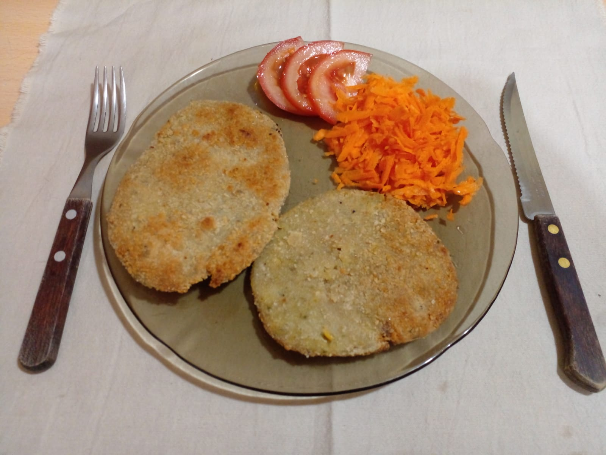

Se trata de un plato controvertido, defendido por unos y cuestionado por otros.
Aquel que se atreva a dejar atrás la ortodoxia milanésica, que prepare la primera
milanesa de soja.
Ingredientes (para 4 personas):
- 2 tazas de porotos de soja lavados y remojados durante 12 hs
- 250 g de harina común
- 2 huevos
- Pan rallado (lo que sea necesario)
- Sal y pimienta a gusto
- Orégano y perejil picado a gusto
- Aceite de girasol

Preparación:
-
Hervir los porotos de soja en agua con sal a gusto hasta que estén tiernos.
Retirar del fuego, escurrir y dejar entibiar.
-
Agregar un chorrito de agua a los porotos y procesarlos hasta obtener una pasta.
Cuanta menos agua sea necesario agregar, mejor, ya que evitará tener que excederse
con la harina en el paso siguiente.
-
Salpimentar la mezcla y agregar el orégano y el perejil. Añadir la harina de a poco
mientras se va integrando enérgicamente, hasta que la mezcla tome consistencia y
se pueda trabajar con ella sin que se pegotee.
-
Amasar la mezcla sobre la mesada y estirar. Cortar las milanesas de la forma deseada
(se puede usar un vaso grande para cortarlas en círculos, por ejemplo).
-
Poner en una cacerola agua a hervir. Cuando el agua esté hirviendo, sumergir las milanesas
de a una por vez, de forma que cada una tenga lugar en la olla, hasta que floten
(aproximadamente 2 o 3 minutos). Retirar con un escurridor o espumadera y dejar enfriar.
-
A partir de acá, hay que empanarlas y freírlas como cualquier otra milanesa:
pasar las milanesas por huevo y luego empanarlas con pan rallado. Freírlas en una sartén
con aceite hasta que estén doradas de ambos lados (5 a 7 minutos por cada lado).
¡A comer! Es momento de que los fundamentalistas de la milanesa de carne cedan un poco
de terreno y prueben esta alternativa. ¡Buen provecho!